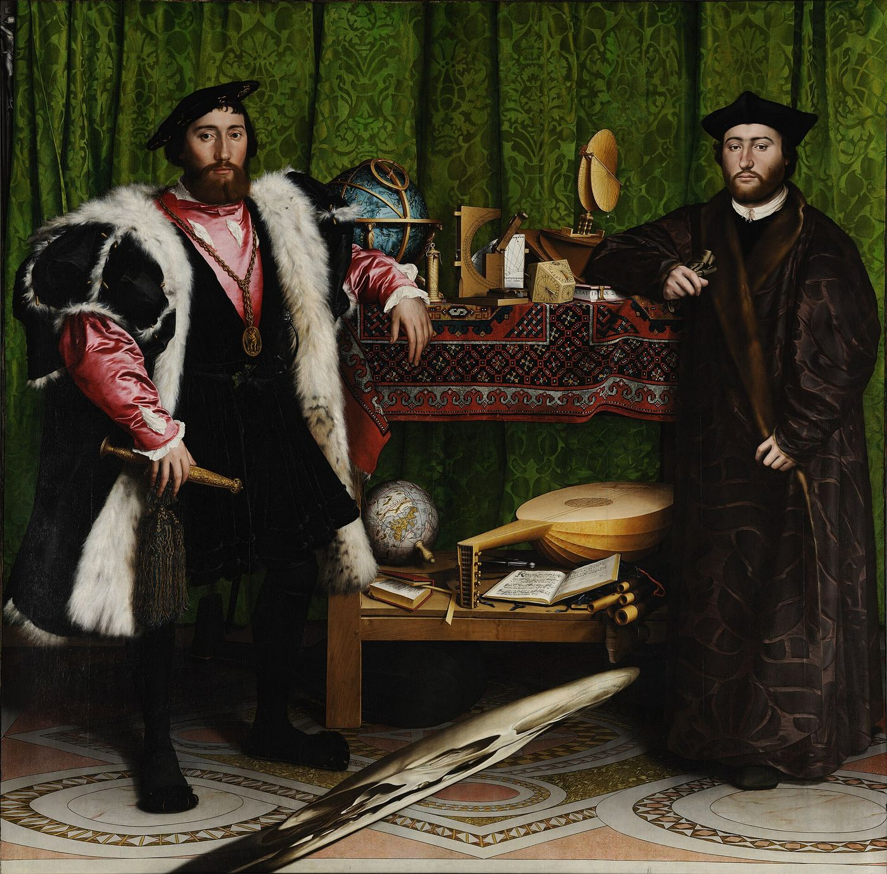
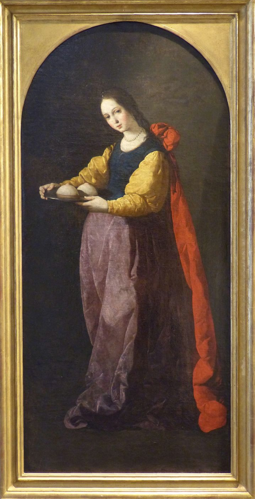
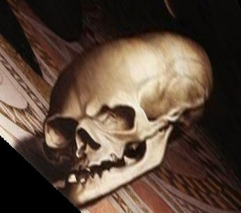
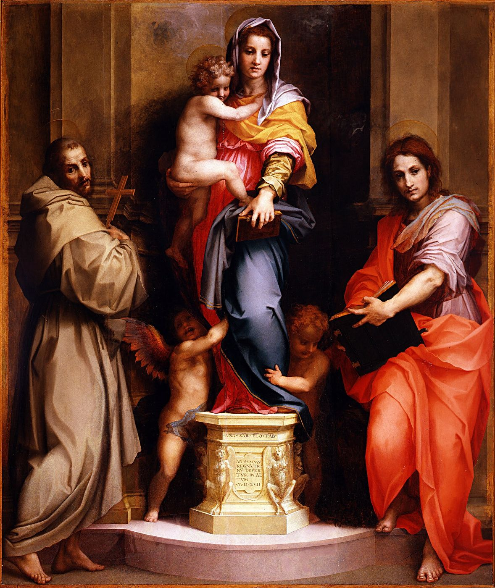

Die Objektfindung ist eigentlich eine Wiederfindung.
Sigmund Freud, Drei Abhandlungen zur Sexualtheorie (1905)
I
Kavramın adı, Lacan’ın cebirsel yazımının küçük bir harfidir. Fransızca autre, yani “öteki” kelimesinin baş harfi olan küçük a, Lacan’ın öğretisinde önce benzer öteki, ayna imgesinden türeyen ve benle rekabet eden öteki için kullanılır; büyük harfle yazılan A ise Autre, yani Büyük Başka içindir. 1960’ların başından itibaren küçük harf bambaşka bir anlam kazanır ve Lacan’ın kendine özgü buluşlarının en önemlisi sayılan kavramın adına dönüşür. Lacan bu adın çevrilmemesinde ısrar etmiştir; böylece terim, anlamı bağlama göre değişen bir sözcük olmaktan çok, işlevini yalnızca bir yapı içindeki yerinden alan cebirsel bir işaret olarak kalır.1 Bu denemede de terimi özgün biçimiyle kullanacağım; ama Türkçedeki yaygın karşılığının, “arzu nesnesi”nin, neden yanıltıcı olabileceğini göstermeye çalışacağım.
II
Kavramın kökleri Freud’dadır. Freud 1905’te, Cinsellik Kuramı Üzerine Üç Deneme’de, bebeğin ilk doyum deneyimini anne memesiyle yaşadığını ve sonraki bütün nesne seçimlerinin bu ilk deneyime göre biçimlendiğini yazarken, epigraf olarak aldığım cümleyi kurar: Nesneyi bulmak, aslında onu yeniden bulmaktır.2 Cümlenin gizli paradoksu, Lacan’ın onu okuyuşunda açığa çıkar: Yeniden bulunmaya çalışılan nesne, hiçbir zaman gerçekten sahip olunmuş bir nesne değildir. Sonradan, kaybın içinden geriye doğru kurulan bir nesnedir ve hiçbir somut nesne onun yerini tam olarak tutamaz. Freud yirmi yıl sonra, 1925’te olumsuzlama üzerine yazdığı kısa ama yoğun makalede, aynı düşünceye geri döner: Gerçeklik sınamasının ilk ve doğrudan amacı, tasarımda bulunan bir nesneye karşılık gelen bir nesneyi algıda bulmak değil, onu yeniden bulmak, onun hâlâ orada olduğuna kendini inandırmaktır.3 Algıladığımız dünya, bir bakıma, hep bir kaybın ardından kurulur; nesneleri tanırken, aslında yitirdiğimiz bir şeyin izini ararız. Objet petit a, bu izin adıdır. Freud’un 1895’teki Taslak’ında, bebeğin karşısındaki insanın, onun tarafından hiçbir zaman tam olarak kavranamayan bir kalıntısına verdiği ad olan das Ding, yani Şey de bu düşüncenin bir başka öncülüdür; Lacan bu kavramı etik seminerinde ayrıntılı olarak işler.
Kavramın bir başka kaynağı, Freud’dan sonraki psikanalitik geleneğin “kısmi nesneler” üzerine düşüncesidir. Karl Abraham ve ardından Melanie Klein, bebeğin dünyasının bütün insanlardan önce parçalardan, iyi ya da kötü olarak yaşanan memeden, sesten, bakıştan oluştuğunu göstermişti. Donald Winnicott’un 1953’te tanımladığı geçiş nesnesi, yani bebeğin anneden ayrılırken sarıldığı battaniye ya da oyuncak, hem iç dünyaya hem dış dünyaya ait olan bu ara nesnelerin en tanınmış örneğidir.4 Lacan bu mirası devralır ama onu köklü biçimde dönüştürür: Objet petit a bir kısmi nesne olmaktan önce, bir boşluğun, öznenin dile girişiyle birlikte bedenden kopan bir parçanın bıraktığı yerin adıdır.
III
Kavram en olgun biçimine, Lacan’ın 1962–1963 yıllarında kaygıya ayırdığı onuncu seminerde ulaşır. Lacan burada a’yı arzunun nesnesi olarak değil, arzunun nedeni olarak tanımlar. Ayrım ince ama belirleyicidir. Arzunun nesnesi, arzunun ileride, önünde aradığı şeydir; arzunun nedeni ise arzunun arkasında, onu harekete geçiren yerde durur. İnsan bir kişiyi bütünüyle arzulamaz; onda kendisini tutsak eden belirli bir ayrıntıyı, bir bakışı, bir ses tonunu, bir yürüyüş biçimini arzular ve bu ayrıntı, sevilen kişinin bilinçli niteliklerinden bağımsız olarak, arzunun ateşini yakan şeydir. Lacan bu nesnenin başlıca biçimleri olarak memeyi, dışkıyı, bakışı ve sesi sayar: bedenden kopan, öznenin hem kendisine ait olan hem de ait olmayan parçalar.5
Lacan bu nesnelerin kime ait olduğu sorusunda da alışılmış düşünceyi tersine çevirir. Meme, ilk bakışta annenin bedeninin bir parçasıdır; bebek onu annede bulur, ondan alır, ondan ayrılır. Lacan ise kaygı seminerinde, memenin bir bakıma bebeğin tarafında durduğunu, annenin bedenine iliştirilmiş, bebekle anne arasında bir ara organ gibi işlediğini öne sürer; tıpkı doğumda kopan ve bebeğin mi annenin mi olduğu tam söylenemeyen eş gibi.6 Bu düşüncenin sonucu derindir: Sütten kesilen bebeğin kaybettiği şey bir başkasının parçası değil, kendi varlığının bir parçasıdır. Objet petit a bu yüzden dışarıdaki bir nesne olmaktan çok, öznenin kendinden kopmuş, onu hem eksik bırakan hem de arzusunu harekete geçiren bir parçasıdır.
Lacan aynı yıllarda bu kopuşa bir mit de yazar. 1964’te, bilinçdışının konumu üzerine yazdığı bir metinde, doğum anında, yumurtanın zarları yırtılırken, ondan bir şeyin kaçıp gittiğini hayal etmemizi ister: incecik, yassı, bir amip gibi her yere sızabilen bir organ, bir zar, Lacan’ın deyişiyle bir “lamel”. Lacan buna bir kelime oyunuyla hommelette der: insan, homme, ile omlet, omelette, kelimelerinin birleşimi, yumurta kırıldığında çıkan küçük adam.7 Bu mitsel organ, libidonun kendisidir: cinsel üreme yoluyla doğan, dolayısıyla ölümlü olan bir varlığın yitirdiği, saf ve ölümsüz yaşam. Objet petit a’nın bütün biçimleri, meme, dışkı, bakış, ses, bu kayıp yaşamın bedenin farklı kıyılarında beliren temsilcileridir. Mit tuhaftır, hatta biraz tekinsizdir; ama Lacan’ın neden arzunun nedenini bir eksiklikle, bir kopuşla, bir kayıpla tanımladığını sezgisel olarak anlatır.
Resim tarihi, bedenden kopan bu parçaları, beklenmedik bir yerde, azizlerin ikonografisinde çoktan resmetmişti. On yedinci yüzyıl İspanyol ressamı Francisco de Zurbarán’ın, bugün Montpellier’deki Fabre Müzesi’nde bulunan Aziz Agathe’si, şehitlik sırasında kesilen memelerini, bir gümüş tabağın üzerinde, sakin bir yüzle taşıyan genç bir kadını gösterir. Zurbarán’ın atölyesinden çıkan başka bir tabloda Aziz Lucia, oyulmuş gözlerini aynı biçimde bir tabakta sunar. Lacan kaygı seminerinde bu imgelere değinir.8 Tabaktaki memeler ve gözler, bedenden ayrılmış, sunulabilir, bakılabilir nesnelere dönüşmüştür; ve azizlerin yüzündeki tuhaf dinginlik, bu parçaların kaybının bir acıdan çok bir armağan olarak yaşandığını düşündürür. Lacan’ın objet petit a dediği şey, tam da bu: bedenden kopan, öznenin hem kendisi hem de kendisi olmayan, bir başkasına sunulabilen parça.


Seminerin en ilginç bölümlerinden biri, sesin bir nesne olarak ele alındığı derslerdir. Lacan, psikanalist Theodor Reik’ın Yahudi ritüelinde kullanılan koç boynuzu borusu şofar üzerine yaptığı bir incelemeden yola çıkarak, şofarın sesinde anlamdan bağımsız, sözün ötesinde işleyen bir sesin, bir çağrının varlığını tartışır. Ses, söylenen sözün anlamından artakalan şeydir; ve bu artık, bizi bir sözün içeriğinden çok daha derinden etkileyebilir.
IV
Bakış, Lacan’ın 1964’teki on birinci seminerinde ayrıntılı olarak incelediği nesnedir ve Lacan bu incelemeye, kendi gençliğinden bir anıyla başlar. Yirmili yaşlarında, Bretanya kıyılarında balıkçılarla birlikte denize açıldığı bir gün, balıkçılardan Petit-Jean ona suyun üzerinde yüzen, güneşte parıldayan bir sardalye kutusunu gösterir ve gülerek şöyle der: Şu kutuyu görüyor musun? Görüyorsun, değil mi? Peki, o seni görmüyor!9 Petit-Jean bunu çok komik bulmuştur; Lacan ise, bu küçük anıyı aradan geçen uzun yıllardan sonra, altmış iki yaşında, seminerinde dinleyicilerine anlatırken bile, onu hiç de komik bulmadığını açıkça söyler. Çünkü bir anlamda kutu ona bakmaktadır: Işığın yansıdığı o parlak noktada, kendisinin, geçimini zorlukla sağlayan bu insanların arasında yeri olmayan bir aydın olarak görüldüğü bir bakış belirir. Bakış, görenin gözünde değil, nesnenin tarafında, görme alanının içinde öznenin kendisinin de bir leke olarak yer aldığı noktadadır.
Roland Barthes, Lacan’ın bu seminerinden on altı yıl sonra, ölümünden birkaç hafta önce yayımlanan son kitabında, fotoğraf üzerine düşünürken aynı yapıya kendi yolundan ulaştı. Camera Lucida’da bir fotoğrafa bakışımızı iki öğeye ayırır. Birincisi, Latince bir kelimeyle studiumdur: fotoğrafa duyduğumuz genel, kültürel, eğitimli ilgi; bir dönemi, bir giysiyi, bir sokağı tanımamızı sağlayan bilgi. İkincisi punctumdur: fotoğrafın içinden fırlayıp bizi delen, yaralayan, bize batan küçük ayrıntı. Bir çocuğun kötü dişleri, bir kadının boynundaki kolye, bir adamın bağcıklı ayakkabıları.10 Punctum herkes için aynı değildir; fotoğrafçının yerleştirdiği bir şey de değildir. Bakanın tarihine, onun eksikliğine bağlıdır. Barthes’ın kitabının merkezindeki fotoğraf, annesini beş yaşında bir kış bahçesinde gösteren fotoğraf, kitapta yer almaz; Barthes onu yayımlamayı reddeder, çünkü o fotoğraftaki yarayı yalnızca kendisi görebilir. Objet petit a da böyledir: Bir başkasının gözünde sıradan bir ayrıntı olan şey, bir öznenin arzusunun bütün nedenini taşıyabilir.
Aynı seminerde Lacan, Plinius’un anlattığı ünlü bir resim yarışmasını da hatırlatır. Zeuxis üzümleri öyle ustalıkla resmeder ki kuşlar gökten inip onları gagalamaya çalışır. Rakibi Parrhasius ise duvara bir perde resmeder; Zeuxis, rakibinin resmini görmek için perdenin aralanmasını ister ve yarışmayı kaybettiğini o anda anlar. Kuşları kandırmak için üzüm yeter; insanı kandırmak için ise bir perde, yani ardında bir şey olduğunu vaat eden bir örtü gerekir. Lacan’ın okumasında insan arzusunu harekete geçiren, perdenin ardındaki nesneden çok, perdenin kendisinin vaat ettiği şeydir.
Sinema bu yapıyı en sade biçimiyle Alfred Hitchcock’ta bulur. Hitchcock, François Truffaut’yla yaptığı uzun söyleşide, filmlerinin olay örgüsünü harekete geçiren şeye verdiği adı, MacGuffin’i, küçük bir fıkrayla açıklar. İki adam bir trende karşılıklı oturmaktadır. Biri, bagaj rafındaki paketin ne olduğunu sorar. Öteki, bunun bir MacGuffin olduğunu söyler. MacGuffin nedir? İskoçya dağlarında aslan yakalamaya yarayan bir alet. Ama İskoçya dağlarında aslan yoktur ki! Öyleyse bu bir MacGuffin değildir.11 MacGuffin, filmdeki herkesin peşinden koştuğu, uğruna öldürdüğü, kaçtığı, yalan söylediği şeydir: çalınan formül, kaybolan belge, gizli plan. Ama seyirci onun ne olduğunu hiçbir zaman tam olarak öğrenmez ve bu hiç önemli değildir. Önemli olan, onun herkesi harekete geçirmesidir. Hitchcock’un fıkrası, arzunun nedeninin tam da bu olduğunu söyler: içi boş, varlığı belirsiz, ama bütün hareketi başlatan bir hiç.
Bakışın en büyük resmî örneği ise Holbein’ın 1533 tarihli Elçiler’idir. İki zengin ve bilgili Fransız elçi, aralarında dönemin bilim, müzik ve dünya bilgisini simgeleyen aletlerle dolu bir rafın önünde, kendinden emin bir tavırla durur. Tablonun ön planında ise döşemenin üzerinde, tuhaf, yamuk, anlamsız bir biçim süzülür. İzleyici tablonun önünden ayrılıp yanından, eğik bir açıyla baktığında bu biçim bir kafatasına dönüşür. Lacan bu anamorfozu bakışın yapısının bir resmi olarak okur: Görme alanımızı düzenleyen, her şeyin yerli yerinde olduğu sakin bir dünyanın ortasında, o dünyanın içinde kendi ölümlülüğümüzün, yani hiçbir bilginin dolduramayacağı bir eksikliğin lekesi belirir.


V
Objet petit a, Lacan’ın fantazm formülünde de merkezî bir yer tutar. Lacan fantazmı, bölünmüş öznenin bu nesneyle kurduğu ilişki olarak yazar; fantazm, öznenin arzusunu düzenleyen ve ona bir yön veren bilinçdışı bir senaryodur. Bu senaryo, nesneyi bir çerçevenin içine yerleştirir ve böylece onu hem arzulanabilir hem de katlanılabilir kılar. Fantazm olmadan arzu yönünü yitirir; fantazmın tam ortasında ise hiçbir zaman ulaşılamayacak olan nesne durur.
Bu yapı, gündelik deneyimimizin en tanıdık hayal kırıklıklarından birini açıklar. Uzun süre arzulanan bir şeye, bir kişiye, bir işe, bir eve kavuşulduğunda çoğu zaman tuhaf bir boşluk duygusu belirir: Bu muydu? Lacan’ın yanıtı, arzunun nedeni olan nesnenin hiçbir somut nesnede tam olarak bulunamayacağıdır. Arzu, bir nesneden ötekine kayarak, metonimik bir biçimde sürer. Lacan bunu 1958’de kısa bir formülle söyler: Arzu, varlık eksikliğinin metonimisidir. Her nesne, öznenin varlığındaki o eksikliğin yerini bir an için tutar ve sonra bir başkasına devreder.12 Bu, arzunun bir kusuru değil, onun koşuludur; ulaşılmış bir nesne arzuyu tüketseydi, arzulayan bir varlık olmaktan çıkardık. Aşk ile arzu arasındaki ilişki de bu noktada düğümlenir: Aşk, arzunun nedenini sevilen kişide bulduğuna inanır; ve bu inanç, Lacan’ın aktarım üzerine seminerinde Platon’un Şölen’inden ödünç aldığı kelimeyle, sevilenin içinde saklı değerli bir şey, bir agalma olduğu inancıdır.
Türk edebiyatının en çok okunan aşk romanlarından biri, bu yapının neredeyse bir ders kitabı gibidir. Sabahattin Ali’nin 1943’te kitap olarak yayımlanan Kürk Mantolu Madonna’sında, sessiz, silik bir memur olan Raif Efendi’nin ölümünden sonra bulunan defterinde anlattığı gençlik öyküsü, bir resimle başlar. Yirmili yıllarda Berlin’de bulunan genç Raif, bir sergide, kürk mantolu bir kadının otoportresinin karşısında donup kalır. Resmi ertesi gün, sonraki gün, her gün görmeye gelir. Kadının yüzü ona, Andrea del Sarto’nun Floransa’da bulunan Harpiler Madonnası’ndaki Meryem’i hatırlatır; resme kendi içinden “kürk mantolu Madonna” adını verir.13 Raif bir kadına âşık olmadan önce bir bakışa, bir yüzün bir başka yüzü andırmasına, bir kürkün yumuşaklığına âşık olmuştur. Sonra resmi yapan kadınla, Maria Puder’le tanışır ve romanın bütün dramı, resimdeki Madonna ile gerçek Maria arasındaki aralıkta oynanır.


Lacan’ın kavramı, bu romanın neden bu kadar çok okura dokunduğunu da açıklar. Raif’in arzusunu harekete geçiren şey, Maria’nın kendisinden önce, bir resimdeki bakış, bir benzerlik, bir ayrıntıdır; arzunun nesnesinden önce arzunun nedeni gelir. Maria da bunu sezer: Sevilen olmanın, birinin hayalindeki bir imgenin yerini tutmanın yükünü taşımak istemez, uzun süre bu aşka direnir. Romanın sonunda, yıllar sonra, Raif Maria’nın çoktan öldüğünü öğrendiğinde, kayıp nesne bir kez daha, bu kez sonsuza dek, ulaşılamaz bir yere çekilir. Raif’in geri kalan hayatı, bir kaybın etrafında örülmüş sessiz bir bekleyiştir. Objet petit a, romanda, kürk mantoda, Madonna’nın yüzünde, Maria’nın bakışında parıldar; ama hiçbirine tam olarak yerleşmez.
Aşkın bu yapısını edebiyat, psikanalizden çok önce tanıyordu. Stendhal 1822’de yayımladığı Aşk Üzerine’de, âşığın zihninde olup biteni Salzburg’un tuz madenlerinden aldığı bir imgeyle anlatır: Madenin terk edilmiş derinliklerine kışın atılan yapraksız bir dal, iki üç ay sonra çıkarıldığında, parıl parıl parlayan sayısız tuz kristaliyle kaplanmış olarak bulunur; en ince dalcıklar bile pırlantalarla süslenmiş gibidir, asıl dal artık tanınmaz.14 Stendhal bu sürece kristalleşme der. Âşık, sevdiği kişinin her özelliğini, her hareketini, her kusurunu bile bir mükemmelliğin işareti olarak görür; dal kristallerin altında kaybolur. Lacan’ın diliyle, sevilen kişi arzunun nedeniyle kaplanmıştır; görülen, dalın kendisi değil, onu örten parıltıdır.
Doğu edebiyatının en büyük aşk öyküsü ise bu parıltının nereye kadar gidebileceğini gösterir. Fuzûlî’nin 1535’te tamamladığı Leylâ vü Mecnûn’da Kays, Leylâ’ya duyduğu aşkla aklını yitirir, Mecnun adını alır, çöllere düşer, hayvanlarla yaşar. Leylâ başkasıyla evlendirilir; yıllar sonra, kocası öldüğünde, Mecnun’u bulmak için çöle gider. Ama Mecnun, karşısına çıkan Leylâ’yı istemez: İçindeki Leylâ’nın aşkının onu öylesine doldurduğunu, artık dışarıdaki Leylâ’ya yer kalmadığını söyler.15 Bu sahne tasavvufî bir aşkın, beşerî sevgiden ilahî sevgiye yükselişin anlatımı olarak okunur ve öyledir de. Ama psikanaliz onda başka bir şey de duyar: Arzunun nedeni, gerçek bir kişiden koptuğunda, o kişinin kendisini bile gereksiz kılacak kadar güçlü olabilir. Mecnun, Leylâ’nın kendisini değil, Leylâ’da parıldayan ve artık kendi içinde taşıdığı o şeyi sever.
VI
Lacan 1968–1969 yıllarında verdiği on altıncı seminerde kavrama bir başka boyut ekler ve onu Marx’ın artı değer kavramıyla karşılaştırır. Marx’ta artı değer, işçinin emeğinin karşılığı olarak ödenen ücretin ötesinde ürettiği ve kapitalist tarafından el konan değerdir. Lacan, objet petit a’yı bir tür artı-keyif, Fransızca plus-de-jouir olarak düşünür: öznenin söylemin içine girişinin bedeli olarak kaybettiği ve bir artık olarak geri dönen haz.16 Bu karşılaştırma, kavramın yalnızca bireysel bir klinik kavram olmadığını, çağdaş toplumun haz ekonomisini düşünmek için de verimli olduğunu gösterir. Lacan bir yıl sonraki seminerinde, bilimin ve tekniğin ürettiği, arzunun nedeninin yerini doldurma vaadiyle piyasaya sürülen sayısız küçük nesneye, bugün elimizden bırakamadığımız cihazların öncüllerine, kendi uydurduğu bir kelimeyle lathouses adını verir.
VII
Lacan’ın kavramı arıttığı en güzel okumalardan biri, 1958–1959 yıllarında verdiği Arzu ve Yorumu seminerinde Shakespeare’in Hamlet’ine ayırdığı derslerdir. Lacan’a göre Hamlet, arzunun trajedisidir: Hamlet ne istediğini bilemeyen, eylemi sürekli erteleyen, arzusu annesinin arzusunun muammasına takılıp kalmış bir öznedir. Bu okumanın merkezinde Ophelia durur. Lacan, Ophelia’nın adında, Yunanca phallos kelimesinin yankısını duyar ve onu, Hamlet’in arzusunun içinde yeri değişen nesnenin, yani a’nın bir figürü olarak okur.17 Hamlet önce Ophelia’yı sever, sonra onu reddeder, “Bir rahibe manastırına git!” diye haykırır; ve ancak Ophelia öldükten sonra, mezarının başında Laertes’le boğuşurken, onu kırk bin kardeşin sevebileceğinden daha çok sevdiğini ilan eder. Nesne, Lacan’ın okumasında, kaybedildiği anda arzunun içindeki yerini yeniden bulur; yas, arzunun nesnesini geri kurar.
Kavramın klinikteki en çarpıcı karşılıklarından biri, Lacan’ın yeme bozukluklarına dair bir gözlemidir. Lacan, 1956–1957 yıllarında nesne ilişkisi üzerine verdiği seminerde, sinirsel iştahsızlığı yemek yememek olarak değil, “hiçbir şey” yemek olarak tanımlar.18 Bu küçük kayma, büyük bir kavramsal farkı taşır. İştahsız özne bir nesneyi reddetmekle kalmaz; hiçliği, yokluğun kendisini bir nesneye dönüştürür ve onunla beslenir. Ona sevgi yerine yemek sunan, talebine ihtiyacının karşılığıyla yanıt veren bir ötekinin karşısında, “hiçbir şey” yemek, öznenin arzusunu koruyabildiği tek yer olabilir. Objet petit a burada bir varlığın değil, bir yokluğun nesnesidir ve kavramın bütün inceliği, bu yokluğun arzunun ta kendisini taşıyabilmesindedir.
VIII
Klinik açıdan objet petit a kavramı, insanların neden belirli kişilere, belirli durumlara, belirli acılara tekrar tekrar bağlandığını anlamanın anahtarıdır. Bir analizanın hayatında tekrar eden ilişkiler incelendiğinde, çoğu zaman partnerlerin bütününden çok, onları birbirine bağlayan küçük bir ortak özellik, bir bakış biçimi, bir mesafe, bir yoksunluk belirir; bu özellik, analizanın fantazmında arzunun nedeninin yerini tutar. Psikanalitik çalışma bu nesneye sahip olmanın yolunu göstermez; öznenin bu nesneyle kurduğu ilişkiyi değiştirmeyi amaçlar. Bu, arzunun söndürülmesi anlamına gelmez; tersine, arzunun bir tekrarın, bir yazgının, bir zorunluluğun tutsağı olmaktan çıkıp yeniden bir soruya, bir arayışa, bir açıklığa dönüşmesi anlamına gelir. Lacan on birinci seminerin sonunda, analizin ufkunda fantazmın kat edildiği, öznenin artık bu senaryonun tutsağı olmadan arzulayabildiği bir yer düşünür. Fantazmı kat etmek, onu ortadan kaldırmak değildir; insan fantazmsız yaşamaz. Kat etmek, fantazmın bir senaryo olduğunu, bir zamanlar Başka’nın arzusu karşısında bulunmuş bir yanıt olduğunu fark etmek ve onun içinden geçerek, ona bütünüyle bağımlı olmadan arzulayabilmektir. Bir analizan, örneğin, hep onu küçümseyen, ona mesafeli duran, ona ancak kırıntılar veren partnerlere bağlandığını keşfettiğinde, bu senaryonun kendisine ne vaat ettiğini, hangi eski sahneyi yeniden oynattığını sorabilir. Bu soru sorulduğunda, aynı ayrıntı, aynı mesafe, aynı yoksunluk, bir yazgı gibi değil, bir seçim gibi görünmeye başlar; ve bir seçim, değiştirilebilir.
Analistin bu süreçteki yeri de objet petit a’yla ilişkilidir. Analizan, aktarımın içinde, analistte kendi arzusunun nedenini, değerli bir şeyi, kendisi hakkında bir bilgiyi aradığına inanır. Analist bu yeri bir süre taşır, bir nesnenin, bir boşluğun yerini tutar; ama bu yeri doldurmaz, onu kendi kişiliğiyle, kendi bilgisiyle, kendi arzusuyla tıkamaz. Analizin sonunda bu yer boşalır: Analizan, analistte aradığı şeyin hiçbir zaman orada olmadığını, arzusunun nedeninin kendi tarihinde, kendi kaybında olduğunu fark eder.
Türkçedeki “arzu nesnesi” karşılığının yanıltıcılığı da buradan anlaşılır. Arzunun nesneleri sayısızdır ve hepsi bir yerde hayal kırıklığı yaratır. Objet petit a ise bu nesnelerin hiçbiri değildir; onların hepsinin içinde parıldayıp hiçbirinde tutunmayan, arzuyu bir nesneden ötekine taşıyan o kaçak parıltıdır. Holbein’ın kafatası gibi, ona doğrudan bakıldığında anlamsız bir lekeden ibarettir; ancak yanından, eğik bir bakışla, kendi ölümlülüğümüzü ve eksikliğimizi kabul ettiğimiz bir açıdan bakıldığında, bize kim olduğumuza dair bir şey söyler. Raif Efendi’nin resmin önünde geçirdiği günler, Mecnun’un çöldeki yılları, Barthes’ın yayımlamadığı fotoğraf, Hitchcock’un içi boş paketi, aynı şeyin farklı yüzleridir: Arzuyu harekete geçiren, elde edilecek bir şey değil, bir zamanlar yitirilmiş ve ancak bu yitimin izinde aranabilen bir şeydir.
Notlar
- Lacan’ın terimin çevrilmemesi yönündeki ısrarı, Écrits’nin İngilizce seçkisinin çevirmeni Alan Sheridan’ın notunda da belirtilir (J. Lacan, Écrits: A Selection, çev. A. Sheridan, 1977). ↩︎
- S. Freud, Cinsellik Kuramı Üzerine Üç Deneme (1905), SE VII. Freud’un metinleri için Türkçe adlar verilmiş, cilt numaraları Standard Edition’a (SE) göre belirtilmiştir. ↩︎
- S. Freud, “Die Verneinung” (1925), Gesammelte Werke, XIV; SE XIX. Freud aynı makalede, gerçeklik sınamasının bir zamanlar gerçek doyum getirmiş olan nesnelerin yitirilmiş olmasını koşul olarak gerektirdiğini ekler. Lacan bu kısa metni, Jean Hyppolite’in 1954’te seminerinde yaptığı ünlü yorumla birlikte, defalarca yeniden okur. ↩︎
- D. W. Winnicott, “Transitional objects and transitional phenomena”, International Journal of Psycho-Analysis 34 (1953). ↩︎
- J. Lacan, Le Séminaire, Livre X: L’angoisse (1962–1963), Paris: Seuil, 2004. ↩︎
- Lacan, Le Séminaire, Livre X, Mayıs 1963 tarihli dersler. Lacan burada kesiğin, ayrılmanın bebek ile meme arasında değil, meme ile annenin bedeni arasında geçtiğini vurgular; bebeğin yitirdiği şey annesi değil, kendisinin bir parçasıdır. ↩︎
- J. Lacan, “Position de l’inconscient” (1960/1964), Écrits, Paris: Seuil, 1966; ayrıca Le Séminaire, Livre XI, dürtü üzerine dersler. Lacan lamel mitini, Platon’un Şölen’inde Aristophanes’in anlattığı, ikiye bölünmüş insanların öteki yarılarını aradığı mite karşı kurar: Kaybedilen şey öteki yarımız değil, cinsel üremenin bedeli olarak yitirilen ölümsüz yaşamın kendisidir. ↩︎
- Lacan, Le Séminaire, Livre X: L’angoisse (1962–1963). Aziz Agathe’nin üçüncü yüzyılda Sicilya’da, Aziz Lucia’nın dördüncü yüzyılın başında Syrakusa’da şehit edildiği kabul edilir; ikonografide Agathe memeleriyle, Lucia gözleriyle tanınır. ↩︎
- J. Lacan, Le Séminaire, Livre XI: Les quatre concepts fondamentaux de la psychanalyse (1964), Paris: Seuil, 1973, bakış üzerine dersler. ↩︎
- R. Barthes, La Chambre claire: Note sur la photographie, Paris: Gallimard / Seuil / Cahiers du cinéma, 1980. Barthes kitabın ikinci bölümünü, annesinin ölümünden sonra bulduğu ve onu beş yaşında, bir kış bahçesinde gösteren bir fotoğrafa ayırır; ama fotoğrafı kitapta yayımlamaz, çünkü onun yalnızca kendisi için bir punctum taşıdığını, başkaları için sıradan bir fotoğraf olacağını söyler. ↩︎
- F. Truffaut, Le Cinéma selon Hitchcock, Paris: Robert Laffont, 1966. Hitchcock MacGuffin’in casus filmlerinde genellikle gizli belgeler, formüller ya da planlar olduğunu, ama seyirci için bunların ne olduğunun hiçbir önemi bulunmadığını söyler. Slavoj Žižek, MacGuffin’i Lacan’ın objet petit a’sının sinemadaki en saf örneği olarak yorumlar. ↩︎
- J. Lacan, “La direction de la cure et les principes de son pouvoir” (1958), Écrits, Paris: Seuil, 1966. Lacan’ın Fransızca ifadesi « le désir est la métonymie du manque-à-être »’dir. ↩︎
- Sabahattin Ali, Kürk Mantolu Madonna, İstanbul: Remzi Kitabevi, 1943. Roman, kitap olarak basılmadan önce 1940–1941’de Hakikat gazetesinde tefrika edilmişti; yazarın ölümünden yarım yüzyılı aşkın bir süre sonra, 2010’larda Türkiye’nin en çok satan romanları arasına girdi. ↩︎
- Stendhal, De l’amour (1822), ikinci bölüm. Stendhal bu süreci, “kristalleşme” adıyla, aşkın doğuşunun ikinci ve belirleyici evresi olarak tanımlar: Âşık, sevilenin her özelliğinde yeni bir mükemmellik keşfeder. ↩︎
- Fuzûlî, Leylâ vü Mecnûn (1535). Öykünün Arap kaynaklarına dayanan ilk büyük edebî işlenişi Nizâmî’nin 1188 tarihli Farsça mesnevisidir; Fuzûlî’nin Türkçe mesnevisi, aşkı tasavvufî bir anlama, sevgiliden Tanrı’ya uzanan bir yolculuğa doğru genişletir. ↩︎
- J. Lacan, Le Séminaire, Livre XVI: D’un Autre à l’autre (1968–1969), Paris: Seuil, 2006. ↩︎
- J. Lacan, Le Séminaire, Livre VI: Le désir et son interprétation (1958–1959), Paris: La Martinière, 2013. ↩︎
- J. Lacan, Le Séminaire, Livre IV: La relation d’objet (1956–1957), Paris: Seuil, 1994. ↩︎
Kaynakça
- Ali, Sabahattin (1943). Kürk Mantolu Madonna. İstanbul: Remzi Kitabevi.
- Fuzûlî (1535). Leylâ vü Mecnûn.
- Barthes, R. (1980). La Chambre claire: Note sur la photographie. Paris: Gallimard / Seuil / Cahiers du cinéma.
- Freud, S. (1905). Cinsellik Kuramı Üzerine Üç Deneme. SE VII.
- Freud, S. (1925). Die Verneinung. Gesammelte Werke, XIV; SE XIX.
- Freud, S. (1950 [1895]). Entwurf einer Psychologie.
- Lacan, J. (1966). Position de l’inconscient (1960/1964); La direction de la cure et les principes de son pouvoir (1958). Écrits içinde. Paris: Seuil.
- Lacan, J. (1973). Le Séminaire, Livre XI: Les quatre concepts fondamentaux de la psychanalyse (1964). Paris: Seuil.
- Lacan, J. (1977). Écrits: A Selection. Çev. A. Sheridan. London: Tavistock.
- Lacan, J. (1994). Le Séminaire, Livre IV: La relation d’objet (1956–1957). Paris: Seuil.
- Lacan, J. (2013). Le Séminaire, Livre VI: Le désir et son interprétation (1958–1959). Paris: La Martinière.
- Lacan, J. (2004). Le Séminaire, Livre X: L’angoisse (1962–1963). Paris: Seuil.
- Lacan, J. (2006). Le Séminaire, Livre XVI: D’un Autre à l’autre (1968–1969). Paris: Seuil.
- Lacan, J. (1991). Le Séminaire, Livre XVII: L’envers de la psychanalyse (1969–1970). Paris: Seuil.
- Plinius. Naturalis Historia, XXXV. kitap.
- Shakespeare, W. (y. 1600). Hamlet.
- Stendhal (1822). De l’amour. Paris: Mongie.
- Truffaut, F. (1966). Le Cinéma selon Hitchcock. Paris: Robert Laffont.
- Winnicott, D. W. (1953). Transitional objects and transitional phenomena. International Journal of Psycho-Analysis, 34.